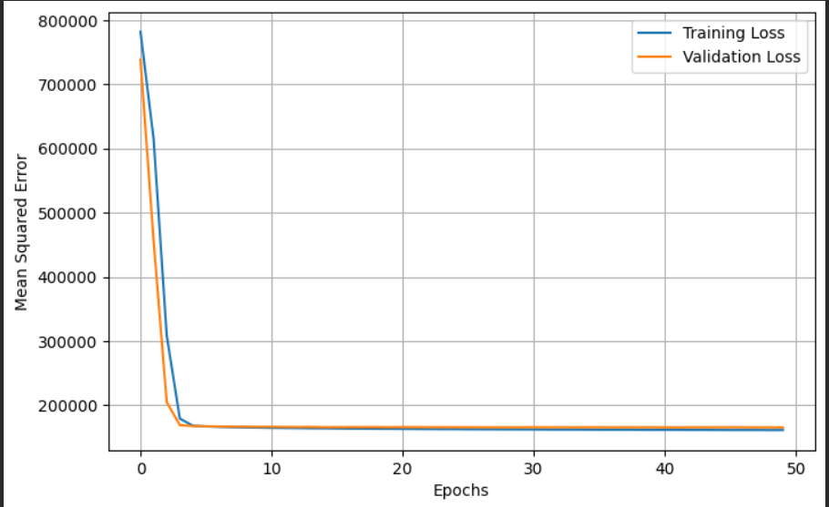

ANN Regression for Nanofluid Heat Transfer Coefficient
Summary
What
Feedforward neural network that predicts the heat transfer coefficient of a nanofluid from nine input properties.
Role
Trained a 32-16-1 Keras network on nine nanofluid properties to predict heat transfer coefficient and evaluated it by test MSE and loss curves, as sole author.
Results
- Two hidden layers of 32 and 16 neurons on nine inputs.
- Test mean squared error of about 1.66e5.
- Training and validation loss curves converge and stay close.


Problem
Predict the heat transfer coefficient (W/m2K) of nanofluids from nanoparticle type, base fluid, volume fraction, temperature, flow velocity, thermal conductivity, specific heat, density and viscosity.
Method
- Kaggle CSV dataset of experimental and simulated nanofluid heat transfer data, with 80 percent for training, 20 percent for testing and standardised features.
- Keras feedforward network with hidden layers of 32 and 16 neurons with ReLU and a linear output neuron.
- Mean squared error loss and the Adam optimizer, for 50 epochs at batch size 32 with a 20 percent validation split.
Results
Test mean squared error is about 1.66e5, which the report describes as acceptable given the data variability. Loss curves drop quickly in early epochs, then converge with training and validation close.
Validation
A 20 percent held-out test set plus a 20 percent validation split during training.
Limitations
- No percent error or R squared is reported, so the MSE is hard to read against the output scale.
- The public dataset mixes experimental and simulated data, and the split is a single one.
Tools
- TensorFlow
- Keras